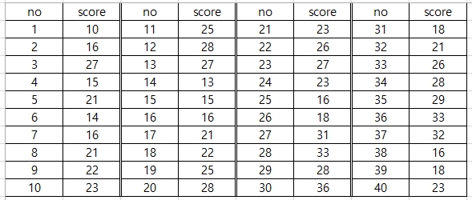
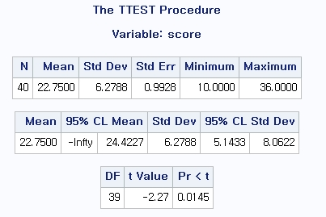
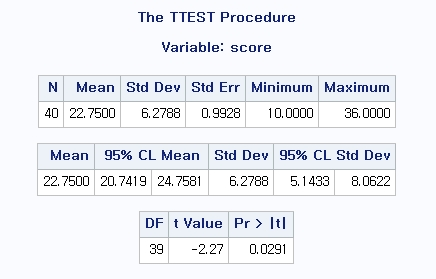
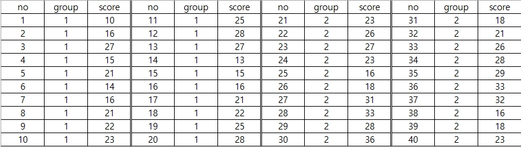
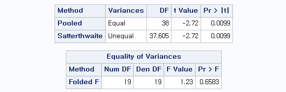
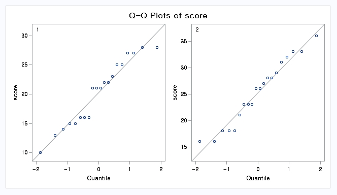
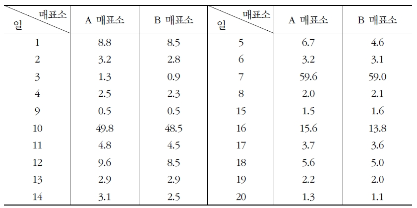
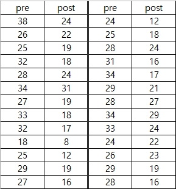
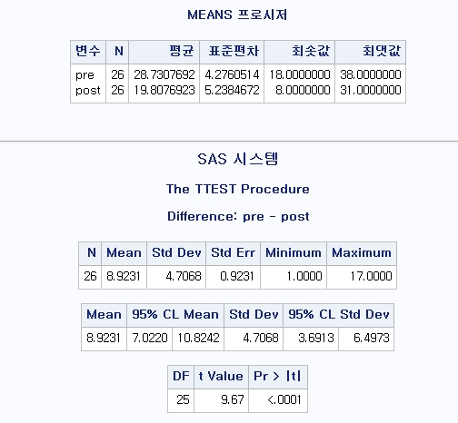

Chapter 1 평균차이 검정
생명과학 분야의 연구에서는 실험군과 대조군을 비교한다거나 어떤 처리 전후의 변화가 있는지를 알아보는 분석을 해야 할 경우가 많다. 이 장에서는 반응이 연속형인 경우에 두 개의 독립적인 집단간에 차이가 있는가를 보는 방법과 짝지은 표본의 분석방법을 알아보자. 이러한 목적으로 시행되는 분석방법을 평균차이검정(t-test)이라 한다.
1.1 일표본 \(t\)-검정
\(z\)-test는 다음과 같은 두 가정 중 최소 하나의 가정을 요구함
모집단의 분포는 정규(normal) 분포이고 모분산 \(\sigma^2\)이 알려져 있다.
표본크기가 크다.
이때 표준화된 표본평균의 분포는 \(\frac{\bar{X}-\mu}{\sigma^2} \sim N(0,1)\) 이다.
현실적으로 모분산 \(\sigma^2\)은 대부분 알려져 있지 않음
\(X_1, \cdots, X_n\)이 평균 \(\mu\), 분산 \(\sigma^2\)인 정규분포를 따르는 모집단에서 나온 확률 표본이라고 하자.
만약 표본크기 \(n\)이 크고 모집단의 분포가 평균이 \(\mu\) 분산이 \(\sigma^2\)(unknown)인 정규분포라면, 자유도가 \(n-1\)인 \(t\)분포를 따르는 검정통계량 \(T\)를 정의할 수 있으며, 이러한 검정 통계량을 이용하여 모평균 \(\mu\)에 대해 검정하는 방법을 일표본 \(t\)-검정(one-sample t-test)이라고 함
가설의 형태
양측검정 : \(H_0 : \mu=\mu_0 \quad vs. \quad H_1 : \mu \ne \mu_0\)
단측(좌측)검정 : \(H_0 : \mu=\mu_0 \quad vs. \quad H_1 : \mu < \mu_0\)
단측(우측)검정 : \(H_0 : \mu=\mu_0 \quad vs. \quad H_1 : \mu > \mu_0\)
검정통계량 \[T=\frac{\bar{X} - \mu_0}{S/\sqrt{n}} \sim t_{(n-1)}\]
유의수준 \(\alpha\)에서 임계값 \[\pm t_{\alpha/2,(n-1)} \quad \text{또는} \quad \pm t_{\alpha,(n-1)}\]
양측검정에서의 기각역
- Reject \(H_0\) if \[T \ge t_{\alpha/2,(n-1)} \quad \text{또는} \quad T \le -t_{\alpha/2,(n-1)}\]
단측검정에서의 기각역
In right-tail test, reject \(H_0\) if \[T \ge t_{\alpha,(n-1)}\]
In left-tail test, reject \(H_0\) if \[T \le -t_{\alpha,(n-1)}\]

예제) Suppose the "average" cholesterol level in children is \(175mg/dl\) and the mean cholesterol level of \(10\) children whose fathers died from heart disease is \(200ml/dl\) and the sample standard deviation is \(50mg/dl\). Test the hypothesis that the mean cholesterol level is higher in this group than in the general population.
풀이)
The hypothesis: \(H_0 : \mu=175, \hskip5pt vs. \hskip5pt H_1 : \mu > 175\)
Significance level: \(\alpha=0.05\)
Rejection region: \(t>t_{(\alpha,n-1)}=t_{(0.05,9)}=1.833\)
Value of test statistic: \(t_0=\frac{200-175}{50\sqrt{10}}=1.58\)
\(P\)-value: \(P(t_9>1.58)=0.074\)
Conclusion: Because the value of test statistic, \(1.58\) is less than the critical value \(1.833\) or the P-value \(0.074\) is greater than the siganificance level \(0.05\), we conclude that our results are not statistically significant and the null hypothesis is accepted.
예제) 새로운 항우울제의 치료 효과를 증명하기 위해 40명의 우울증 환자에게 항우울제를 투여하였다. 1개월의 치료 뒤 측정한 우울증 점수를 통해 항우울제의 효과를 알아보고자 한다. 이때 우울증 점수가 25점 이하이면 항우울제가 효과가 있다고 판단한다. 항우울제가 효과가 있는지 검정하라.

1.1.1 With R
- 데이터 입력
score <- c(10,16,27,15,21,14,16,21,22,23,25,28,27,13,15,16,21,22,25,28,23,26,27,23,16,18,31,33,28,36,18,21,26,28,29,33,32,16,18,23)- 정규성 검정
shapiro.test(score)##
## Shapiro-Wilk normality test
##
## data: score
## W = 0.9763, p-value = 0.5546정규성 검정의 결과를 살펴보면 \(P\)-value가 0.5546으로 유의수준 5% 하에서 데이터가 정규성을 만족한다는 귀무가설을 기각하지 못한다.
- 일표본 t-검정
### t-test
t.test(score,mu=25,alternative="less", conf.level=0.9)##
## One Sample t-test
##
## data: score
## t = -2.2664, df = 39, p-value = 0.01453
## alternative hypothesis: true mean is less than 25
## 90 percent confidence interval:
## -Inf 24.0442
## sample estimates:
## mean of x
## 22.75표본 평균은 22.75, \(t\) 통계량은 -2.2664로 \(P\)-value는 0.01453이다. \(P\)-value가 유의수준 5%보다 작으므로 통계적으로 유의하다. 이는 표본평균이 귀무가설의 평균인 25보다 작으므로 항우울제는 유의미한 효과가 있다고 할 수 있다. 이때 신뢰구간은 단측 검정을 시행하였기 때문에 (\(-\infty, 24.0442\))로 나타나며, 25를 포함하지 않으므로 역시 통계적 유의성을 보장한다. 여기서 단측검정은 t.test의 인수 중 alternative=“less”이면 좌측, alternative=“greater”는 우측 검정, default는 양측검정인 alternative=“two.sided”로 지정되어 있다.
### t-test : two sided test
t.test(score,mu=25, conf.level=0.95)##
## One Sample t-test
##
## data: score
## t = -2.2664, df = 39, p-value = 0.02905
## alternative hypothesis: true mean is not equal to 25
## 95 percent confidence interval:
## 20.74195 24.75805
## sample estimates:
## mean of x
## 22.75- \(P\)-value \(0.0291\)은 유의수준 \(5\%\)보다 작으므로 통계적으로 유의하다. 이때 표본평균은 \(22.75\)로 \(25\)보다 작으므로 항우울제는 효과가 있다고 할 수 있다.
1.1.2 With SAS
SAS Code
data onettest;
input no score @@;
cards;
1 10 11 25 21 23 31 18
2 16 12 28 22 26 32 21
3 27 13 27 23 27 33 26
4 15 14 13 24 23 34 28
5 21 15 15 25 16 35 29
6 14 16 16 26 18 36 33
7 16 17 21 27 31 37 32
8 21 18 22 28 33 38 16
9 22 19 25 29 28 39 18
10 23 20 28 30 36 40 23
;
run;One sided test
proc ttest data=onettest h0=25 sides=L;
var score;
run;- Results - one sided test

- \(P\)-value \(0.0145\)는 유의수준 \(5\%\)보다 작으므로 귀무가설을 기각한다. 따라서 항우울제는 효과가 있다고 할 수 있다.
Two sided test
proc ttest data=onettest h0=25;
var score;
run;- Results - two sided test

- \(P\)-value \(0.0291\)은 유의수준 \(5\%\)보다 작으므로 통계적으로 유의하다. 이때 표본평균은 \(22.75\)로 \(25\)보다 작으므로 항우울제는 효과가 있다고 할 수 있다.
1.2 독립표본 \(t\)-검정
확률표본 (\(X_1, X_2, \ldots , X_{n_1}\))과 (\(Y_1, Y_2, \ldots , Y_{n_2}\))이 서로 독립인 두 정규모집단 \(N(\mu_1, \sigma_1^2)\), \(N(\mu_2, \sigma_2^2)\)으로부터 각각 표본크기 \(n_1\)과 \(n_2\)만큼 추출되고, 모분산 \(\sigma_1^2\)과 \(\sigma_2^2\)이 알려지지 않았을 때, 두 모평균 차 \(\mu_1 - \mu_2\)에 대한 검정방법을 독립표본 \(t\)-검정(independent two-sample \(t\)-test)이라고 함
검정통계량은 두 모분산이 알려지지 않았지만, 두 모분산이 서로 같다고 가정했을 경우(\(\sigma_1^2=\sigma_2^2=\sigma^2\))와 그렇지 않은 경우(\(\sigma_1^2\ne\sigma_2^2\))로 구분하여 사용됨
가설의 형태
양측검정 : \(H_0 : \mu_1-\mu_2=d_0 \quad vs. \quad H_1 : \mu_1-\mu_2 \ne d_0\)
단측(좌측)검정 : \(H_0 : \mu_1-\mu_2=d_0 \quad vs. \quad H_1 : \mu_1-\mu_2 < d_0\)
단측(우측)검정 : \(H_0 : \mu_1-\mu_2=d_0 \quad vs. \quad H_1 : \mu_1-\mu_2 > d_0\)
검정통계량: 두 모집단의 분산이 같은 경우 \[T=\frac{(\bar{X}-\bar{Y})-d_0}{S_p\sqrt{1/n_1+1/n_2}}\sim t_{(n_1+n_2-2)}\] 여기서 사용되는 \(S_p\)는 합동표준편차 \[S_p=\sqrt{\frac{(n_1-1)S_1^2+(n_2-1)S_2^2}{n_1+n_2-2}}\] 이고 \(S_1^2\)과 \(S_2^2\)은 각각 크기가 \(n_1\)과 \(n_2\)인 표본으로부터 구한 표본분산임
검정통계량: 두 모집단의 분산이 다른 경우 \[T=\frac{(\bar{X}-\bar{Y})-d_0}{\sqrt{S_1^2/n_1+S_2^2/n_2}}\sim t_{(\nu)}\] 여기서 자유도 \(\nu\)는 구간추정에서와 마찬가지로 새터스웨이트의 자유도를 이용함 \[\nu=\frac{\left(\frac{S_1^2}{n_1}+\frac{S_2^2}{n_2} \right) ^2}{\frac{(S_1^2/n_1)^2}{n_1-1}+\frac{(S_2^2/n_2)^2}{n_2-1}}\]
양측검정에서의 기각역
- Reject \(H_0\) if \[T \ge t_{\alpha/2,(d.f)} \quad \text{또는} \quad T \le -t_{\alpha/2,(d.f)}\]
단측검정에서의 기각역
In right-tail test, reject \(H_0\) if \[T \ge t_{\alpha,(d.f)}\]
In left-tail test, reject \(H_0\) if \[T \le -t_{\alpha,(d.f)}\]

예제) Suppose a sample of eight \(35\)- to \(39\)-year-old nonpregnant, premenopausal OC users who work in a company are identified who have mean systolic blood pressure of \(132.86mmHG\) and sample standard deviation of \(15.34mmHg\). A sample of twenty-one \(35\)- to \(39\)-year-old nonpregnant, premenopausal non-OC users are similarly identified who have mean systolic blood pressure of \(127.44mmHg\) and sample standard deviation of \(18.23mmHg\). When the two variances are equal, assess the statistical significance of mean difference in blood pressure between the two group.
풀이)
The hypothesis: \(H_0 : \mu_1=\mu_2 \quad vs. \quad H_1 : \mu_1 \ne \mu_2\)
Significance level: \(\alpha=0.05\)
Rejection region: \(|t|>t_{(\alpha/2,n-1)}=t_{(0.025,27)}=2.052\)
Value of test statistic:
\[s_p^2=\frac{7(15.34)^2+20(18.23)^2}{27}=307.18\]
\[t_0=\frac{132.86-127.44}{17.527\sqrt{1/8+1/21}}=0.74\]
\(P\)-value: \(2\times P(t_27>0.74)=0.46\)
Conclusion: Because the value of test statistic is \(-2.052<0.74<2.052\) or the P-value \(0.46\) is greater than the siganificance level \(0.05\), we conclude that our results are not statistically significant and the null hypothesis is accepted. Thus the mean blood pressures of the two groups of OC users and non-OC users do not significantly differ from each other.
1.2.1 두 모분산 비의 검정
정규분포를 따르는 상호 독립인 두 모집단 \(N(\mu_1, \sigma_1^2)\), \(N(\mu_2,\sigma_2^2)\)으로부터의 표본크기가 \(n_1\)과 \(n_2\)인 확률표본을 각각 \(X_1, \ldots, X_{n_1}\)과 \(Y_1, \ldots, Y_{n_2}\)라고 할 때 이에 대한 표본분산을 각각 \(S_1^2=\frac{1}{n_1-1}\sum_{i=1}^{n_1}(X_i-\bar{X})^2\), \(S_2^2=\frac{1}{n_2-1}\sum_{i=1}^{n_2}(Y_i-\bar{Y})^2\)이라고 하자.
그러면 \(U=(n_1-1)S_1^2/\sigma_1^2\)와 \(V=(n_2-1)S_2^2/\sigma_2^2\)은 각각 자유도가 \(n_1-1\), \(n_2-1\)인 \(\chi^2\)분포를 따르고 \(F\)분포의 정의에 의해 다음이 성립함 \[F=\frac{U/(n_1-1)}{v/(n_2-1)}=\frac{S_1^2/\sigma_1^2}{S_2^2/\sigma_2^2}\sim F_{n_1-1,n_2-1}\]
귀무가설을 \(H_0 : \sigma_1^2/\sigma_2^2=1\)(즉, \(\sigma_1^2=\sigma_2^2\))이라고 정의하면 \(H_0\)하에서의 검정통계량 \(F_0\)는 다음과 같음 \[F_0=\frac{S_1^2}{S_2^2}\sim F_{n_1-1,n_2-1}\]
따라서 유의수준 \(\alpha\)하에서 \(\sigma_1^2\)과 \(\sigma_2^2\)의 동일성 여부에 대한 가설검정 절차를 요약하면 다음과 같음

두 모분산 비의 검정에서 유의수준 \(\alpha\)는 우측검정의 경우는 \(\alpha=P(F_0\ge F_{(\alpha,n_1-1,n_2-1)})\)이고 좌측검정의 경우는 \(\alpha=P(F_0\le F_{(1-\alpha,n_1-1,n_2-1)})\)임
여기서 \(F_{(1-\alpha,n_1-1,n_2-1)}=(F_{(\alpha,n_2-1,n_1-1)})^{-1}\)이므로 좌측검정의 유의수준 \(\alpha\)는 \(\alpha=P(F_0\le (F_{(\alpha,n_2-1,n_1-1)})^{-1})\)과 같음
양측검정의 경우는 \(\alpha=P(F_0\ge F_{(\alpha/2,n_1-1,n_2-1)}) \hskip5pt \text{또는} \hskip5pt F_0\le (F_{(\alpha/2,n_2-1,n_1-1)})^{-1}\)
예제) \(12\)세의 남아와 여아 중에서 남아 \(25\)명, 여아 \(23\)명을 단순무작위 추출하여 폐활량을 조사한 결과, 남아의 분산은 \(0.145\), 여아의 분산은 \(0.0942\)였다.(남녀 폐활량은 정규분포를 따른다고 가정) 두 모집단의 분산이 같은 지를 유의수준 \(5\%\)에서 검정하라.(단, \(1\): 남아, \(2\): 여아)
풀이)
귀무가설과 대립가설: \(H_0 : \sigma_1^2=\sigma_2^2, \hskip5pt vs. \hskip5pt H_1 : \sigma_1^2\ne \sigma_2^2\)
유의수준: \(\alpha=0.05\)
임계값: \(F_{(0.025,24,22)}=2.3315\), \((F_{(0.025,22,24)})^{-1}=0.4356\)
기각역: \(F_0\ge 2.3315\) 또는 \(F_0\le 0.4356\)
검정통계량값: \(s_1^2=0.145\), \(s_2^2=0.0942\), \(f_0=\frac{0.145}{0.0942}=1.5393\)
\(P\)-값 계산: 검정통계량의 값 \(1.5393\)은 중심에서 우측영역에 위치하므로 \(P\)-값=\(2\times P(F\ge 1.5393)=0.3219\)이다.
\(f_0=1.5393\)은 기각역에 속하지 않으므로 유의수준 \(\alpha=0.05\)에서 귀무가설 \(H_0\)를 기각할 수 없다. 또한 \(P\)-값\(>\alpha\)이므로 귀무가설 \(H_0\)를 기각할 수 없다. 따라서 유의수준 \(5\%\)에서 두 모집단의 분산은 같다고 할 수 있다.
예제) 새로운 항우울제의 치료 효과를 증명하기 위해 \(40\)명의 우울증 환자를 군당 \(20\)명씩 실험군과 대조군으로 무작위 배정하여 실험군에게는 항우울제를, 대조군에게는 위약을 투여하였다. \(1\)개월의 치료 뒤 측정한 우울증 점수를 통해 두 군의 치료 효과의 크기를 비교하고자 한다. 두 군 사이에 우울증 점수의 차이가 있는지 검정하라.

1.2.2 With R
- 데이터 입력
x <- c(10,16,27,15,21,14,16,21,22,23,25,28,27,13,15,16,21,22,25,28)
y <- c(23,26,27,23,16,18,31,33,28,36,18,21,26,28,29,33,32,16,18,23)- 등분산 검정
var.test(x,y)##
## F test to compare two variances
##
## data: x and y
## F = 0.81402, num df = 19, denom df = 19, p-value = 0.6583
## alternative hypothesis: true ratio of variances is not equal to 1
## 95 percent confidence interval:
## 0.3221986 2.0565791
## sample estimates:
## ratio of variances
## 0.814019두 집단의 분산이 같다는 귀무가설에 대해 \(P\)-value는 0.66583으로 유의수준 5%하에서 귀무가설을 기각하지 못한다. 따라서 두 집단의 분산은 같다고 할 수 있다.
- 독립표본 T-검정
t.test(x, y, var.equal=T)##
## Two Sample t-test
##
## data: x and y
## t = -2.7164, df = 38, p-value = 0.00988
## alternative hypothesis: true difference in means is not equal to 0
## 95 percent confidence interval:
## -8.726292 -1.273708
## sample estimates:
## mean of x mean of y
## 20.25 25.25x의 표본평균은 20.25, y의 표본평균은 25.25로 차이는 5만큼 나타난다. 이에 대한 통계적 유의성을 살펴보면, \(P\)-value가 0.00988로 유의수준 5%보다 작게 나타난다. 따라서 두 집단의 우울증 점수는 유의미한 차이가 있다고 할 수 있다. 여기서 두 집단의 분산이 같으면 t.test의 인수에서 var.equal=T로, 분산이 다르면 var.equal=F로 지정한다.
1.2.3 With SAS
SAS Code
data twottest;
input no group score @@;
cards;
1 1 10 11 1 25 21 2 23 31 2 18
2 1 16 12 1 28 22 2 26 32 2 21
3 1 27 13 1 27 23 2 27 33 2 26
4 1 15 14 1 13 24 2 23 34 2 28
5 1 21 15 1 15 25 2 16 35 2 29
6 1 14 16 1 16 26 2 18 36 2 33
7 1 16 17 1 21 27 2 31 37 2 32
8 1 21 18 1 22 28 2 33 38 2 16
9 1 22 19 1 25 29 2 28 39 2 18
10 1 23 20 1 28 30 2 36 40 2 23
;
run;
proc ttest data=twottest;
class group
var score;
run;- Results

x의 표본평균은 20.25, y의 표본평균은 25.25로 차이는 5만큼 나타난다.

두 집단의 분산이 같다는 귀무가설에 대해 \(P\)-value는 0.66583으로 유의수준 5%하에서 귀무가설을 기각하지 못한다. 따라서 두 집단의 분산은 같다고 할 수 있다.
두 집단의 평균 차이에 대한 통계적 유의성을 살펴보면, \(P\)-value가 0.0099로 유의수준 5%보다 작게 나타난다. 따라서 두 집단의 우울증 점수는 유의미한 차이가 있다고 할 수 있다. 여기서 두 집단의 분산이 같으면 pooled의 결과를, 두 집단의 분산이 다르면 Satterthwaite 결과를 해석한다.
아래의 그림은 각 집단의 값이 정규분포를 따르는지(정규성)을 살펴보기위해 histogram과 Q-Q plot을 통해 자료의 분포를 살펴본 결과이다.


1.3 대응표본 \(t\)-검정
관측값들이 짝을 이루고 있는 표본을 대응표본(paired sample) 이라고 함
예를 들어 고혈압 환자에 대한 치료제의 임상시험을 한다고 할 때 우리는 치료제가 효과가 있는지에 관심이 있으며, 이것을 조사하기 위해서 \(n\)명의 고혈압 환자를 추출하여 동일한 환자에게서 치료제를 투여하기 전과 투여한 후의 혈압을 측정하여 관찰하였다고 하면 투여하기 전의 \(n\)개의 관찰값과 투여한 후의 \(n\)개의 관찰값은 서로 짝을 이루며 대응되는데, 이러한 표본을 대응표본이라고 함
\(n\)개의 짝을 이루는 대응표본의 차이, 즉 투여전과 투여 후의 혈압의 차이를 분석하기 위해서는 관찰값들 각각의 차이 \(D_i=X_i-Y_i\)를 계산하여 단일표본으로 생각하면 됨
모집단의 차이 \(\Delta\)에 대한 검정은 검정통계량에 평균 \(\bar{D}\)를 사용하며, 이러한 검정법을 대응표본 \(t\)-검정(paired sample \(t\)-test)이라고 함
\(n\)개의 차이 \(D_1,\ldots, D_n(D_i=X_i-Y_i)\)이 정규모집단으로부터의 추출된 확률표본이라 하고 모집단 차이 \(\Delta\)에 대한 귀무가설이 \(H_0 : \Delta=d_0\)라고 하면 계산된 검정통계량은 다음과 같이 주어지고, 이것은 자유도가 \(n-1\)인 \(t\)분포를 따름
\[T=\frac{\bar{D}-d_0}{S_d/\sqrt{n}}\sim t_{(n-1)}\] 여기서 \(S_d^2=\frac{1}{n-1}\sum_{i=1}^n(D_i-\bar{D})^2\), \(\bar{D}=\frac{1}{n}\sum_{i=1}^nD_i\).

가설의 형태
- 양측검정 : \(H_0 : \Delta=d_0 \quad vs. \quad H_1 : \Delta \ne d_0\)
- 단측(좌측)검정 : \(H_0 : \Delta=d_0 \quad vs. \quad H_1 : \Delta < d_0\)
- 단측(우측)검정 : \(H_0 : \Delta=d_0 \quad vs. \quad H_1 : \Delta > d_0\)
검정통계량 \[T=\frac{\bar{D}-d_0}{S_d/\sqrt{n}}\sim t_{(n-1)}\]
유의수준 \(\alpha\)에서 임계값 \[\pm t_{\alpha/2,(n-1)} \quad \text{또는} \quad \pm t_{\alpha,(n-1)}\]
양측검정에서의 기각역
- Reject \(H_0\) if \[T \ge t_{\alpha/2,(n-1)} \quad \text{또는} \quad T \le -t_{\alpha/2,(n-1)}\]
단측검정에서의 기각역
- In right-tail test, reject \(H_0\) if \[T \ge t_{\alpha,(n-1)}\]
- In left-tail test, reject \(H_0\) if \[T \le -t_{\alpha,(n-1)}\]
예제) 다음 자료는 지난 \(20\)일 동안에 한 극장내의 \(A\)매표소와 \(B\)매표소의 영화 관람권 판매수이다. 두 매표소간의 평균 판매 수에 차이가 있는지 유의수준 \(5\%\)에서 검정하라.

풀이)
귀무가설과 대립가설: \(H_0 : \Delta=0, \hskip5pt vs. \hskip5pt H_1 : \Delta\ne 0\)
유의수준: \(\alpha=0.05\)
임계값: \(t_{(0.025,19)}=2.093\), \(-t_{(0.025,19)}=-2.093\)
기각역: \(T\ge 2.093\) 또는 \(T\le -2.093\)
검정통계량값 계산: \(d_i=x_i-y_i\)라면 \(\bar{d}=0.505\), \(s_d^2=0.378\), \(n=20\), \(t_0=\frac{0.505}{\sqrt{0.378/20}}=3.6733\)
\(t_0=3.6733\)은 기각역에 속하므로 유의수준 \(\alpha=0.05\)에서 귀무가설 \(H_0\)를 기각한다. 따라서 두 매표소의 판매 수에는 차이가 있다고 할 수 있다.
\(P\)-값 계산: \(P\)-값=\(2\times P(T\ge 3.6733)=0.0016\)
따라서 \(P\)-값\(<\alpha\)이므로 귀무가설 \(H_0\)를 기각한다.
예제) 새로운 항우울제의 치료 효과를 증명하기 위한 연구이다. 총 \(26\)명의 우울증 환자를 대상으로 항우울제 치료전/후(Pre/Post)의 우울증 점수를 측정하였다. 치료 전과 비교하여 새 항우울제 치료 후 우울증 점수가 유의하게 감소하였는지 검정하라.

1.3.1 With R
- 데이터 입력
pre <- c(38,26,25,32,28,34,27,33,32,18,25,29,27,24,25,28,31,34,29,28,34,33,24,26,29,28)
post <- c(24,22,19,18,24,31,19,18,17,8,12,19,16,12,18,24,16,17,21,27,29,24,22,23,19,16)- 대응표본 t-검정
t.test(post, pre, paired=T)##
## Paired t-test
##
## data: post and pre
## t = -9.6667, df = 25, p-value = 6.327e-10
## alternative hypothesis: true difference in means is not equal to 0
## 95 percent confidence interval:
## -10.824189 -7.021964
## sample estimates:
## mean of the differences
## -8.923077결과를 살펴보면 \(p\)-value는 6.327e-10으로 유의수준 5%보다 아주 작은 값임을 알 수 있다. 이때 post - pre의 평균은 -8.9로 새 항우울제 치료 후 우울증 점수가 유의하게 감소하였음을 알 수 있다.
- 차이를 통한 일표본 t-검정
d <- post-pre
t.test(d, mu=0)##
## One Sample t-test
##
## data: d
## t = -9.6667, df = 25, p-value = 6.327e-10
## alternative hypothesis: true mean is not equal to 0
## 95 percent confidence interval:
## -10.824189 -7.021964
## sample estimates:
## mean of x
## -8.923077대응표본 t-검정은 차이에 대한 일표본 t-검정과 같고 이에 대한 귀무가설은 전-후 차이의 평균은 0이다 로 나타낼 수 있다. 결과를 살펴보면 대응표본을 통한 검정과 차이에 대한 일표본 검정값이 같음을 알 수 있다.
1.3.2 with SAS
SAS Code
data pairttest;
input pre post @@;
cards;
38 24 24 12
26 22 25 18
25 19 28 24
32 18 31 16
28 24 34 17
34 31 29 21
27 19 28 27
33 18 34 29
32 17 33 24
18 8 24 22
25 12 26 23
29 19 29 19
27 16 28 16
;
run;
proc means data=pairttest;
var pre post;
run;
proc ttest data=pairttest;
paired pre*post;
run;
- Results

결과를 살펴보면 \(p\)-value는 <.0001로 유의수준 5%보다 아주 작은 값으로 새 항우울제 치료 후 우울증 점수가 유의하게 감소하였음을 알 수 있다.